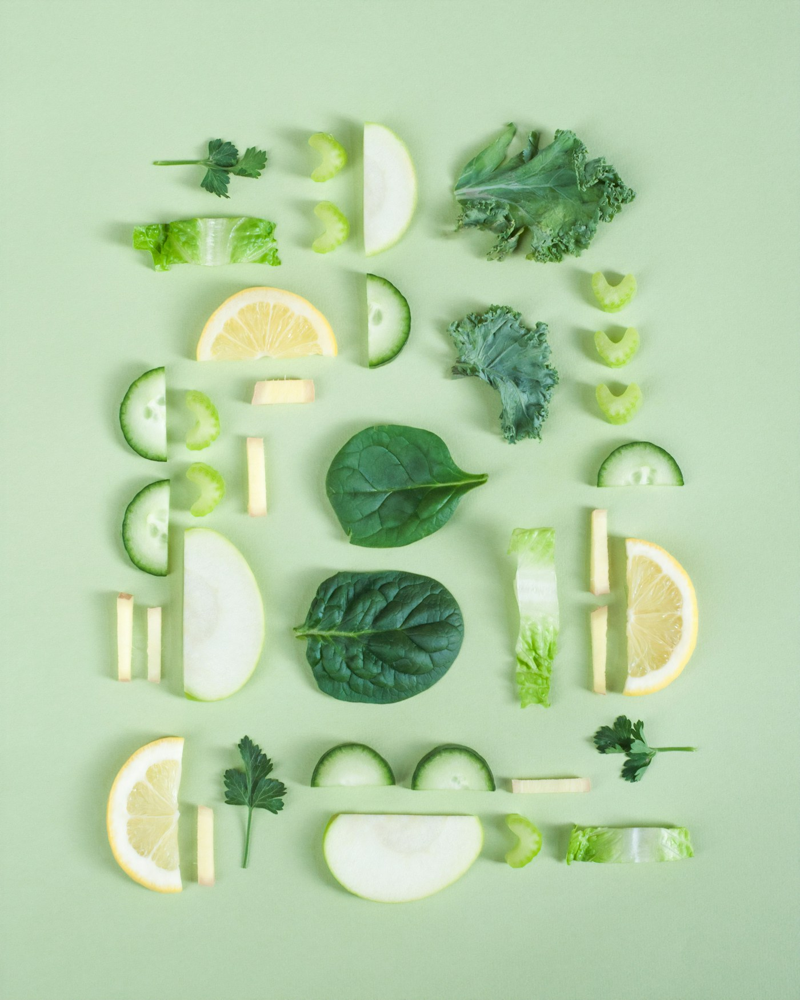
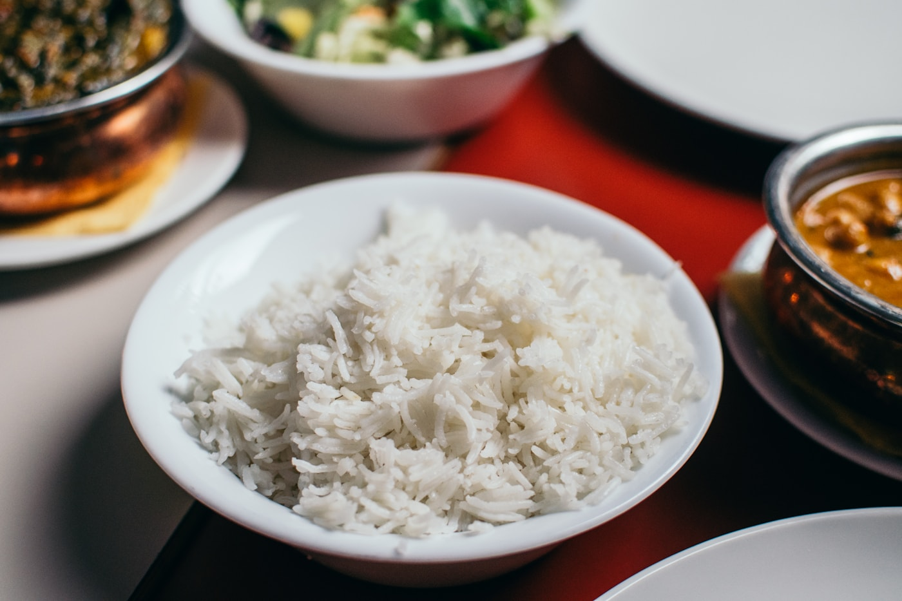

Fruit
Organic Avocados
Picked for flavour and everyday versatility.
$4.99A thoughtful market for minimally processed ingredients and the stories behind them.

We choose recognizable ingredients, work within natural growing cycles and keep distance between field and fork as short as possible.
Natural ingredients
Simple food with clear labels.
Responsible production
Better choices beyond the shelf.

Picked for flavour and everyday versatility.
$4.99
Picked for flavour and everyday versatility.
$3.49
Picked for flavour and everyday versatility.
$5.25
Picked for flavour and everyday versatility.
$3.79The names, places and practices behind your basket.

Small-batch growing, healthy soil and thoughtful harvests shape everything this family farm sends us.
Read Story
Small-batch growing, healthy soil and thoughtful harvests shape everything this family farm sends us.
Read Story
Small-batch growing, healthy soil and thoughtful harvests shape everything this family farm sends us.
Read StoryOrganic Organic
Organic Organic
Organic Organic
Organic Organic
Organic Organic
OrganicA better food routine in three simple steps.
Personalize your plan in a few straightforward clicks.
Personalize your plan in a few straightforward clicks.
Personalize your plan in a few straightforward clicks.
“Good food creates a community around the table. Everleaf makes that connection feel close again.”
Start with a few favourites or build a basket around the season.
Start Shopping Organic